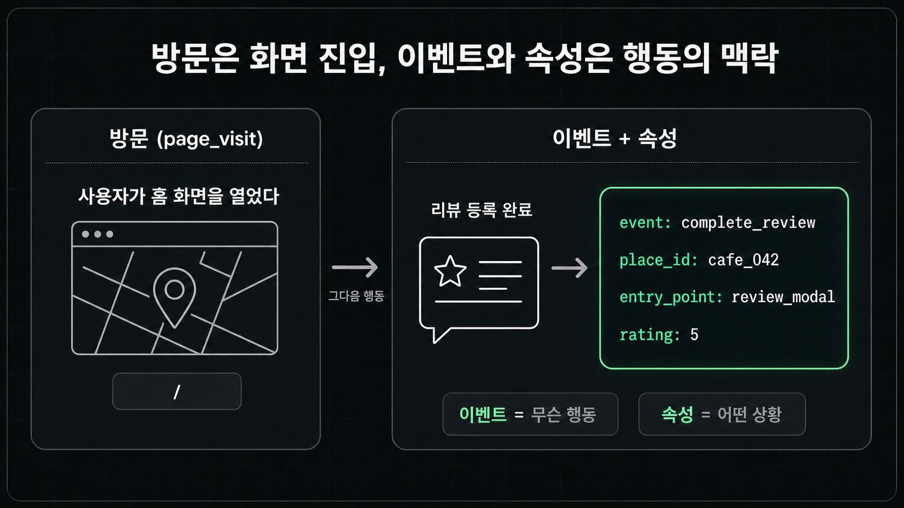
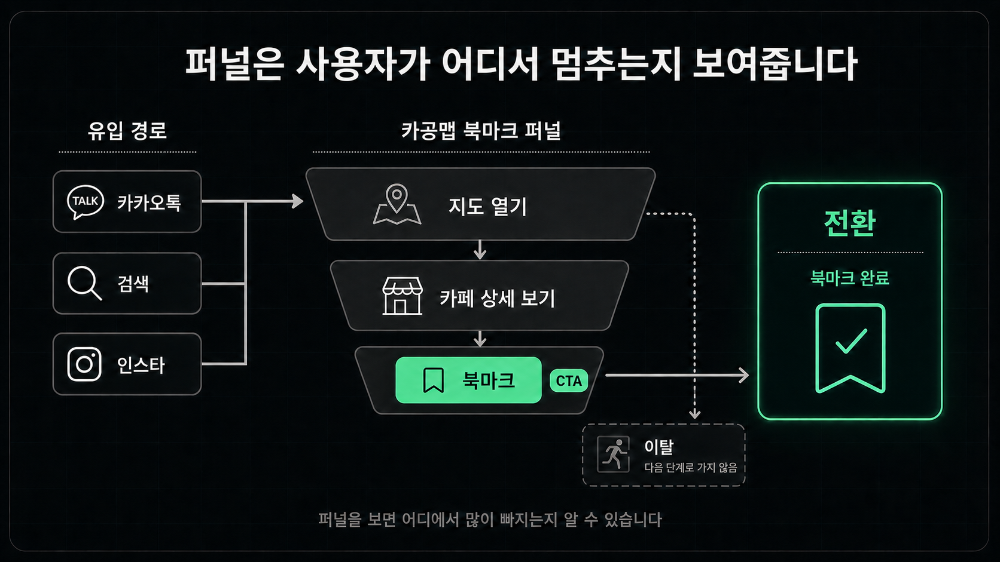
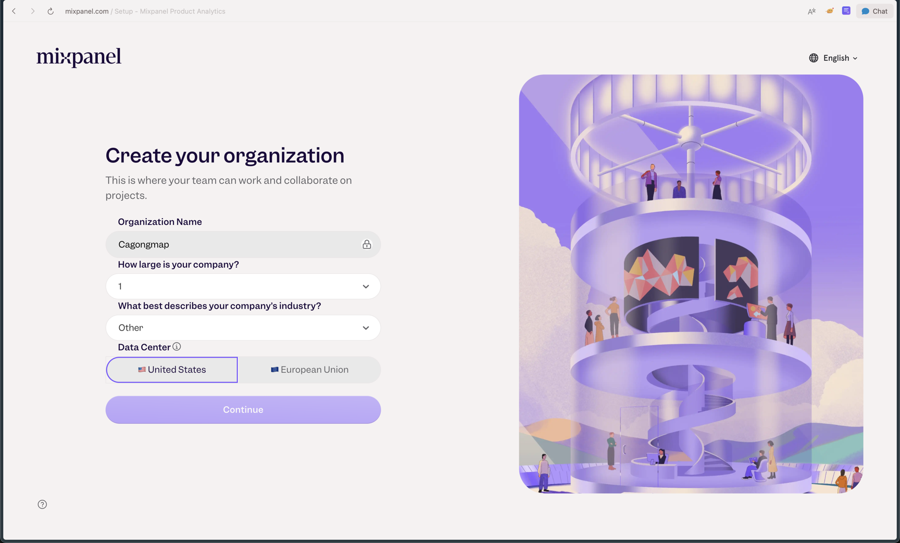
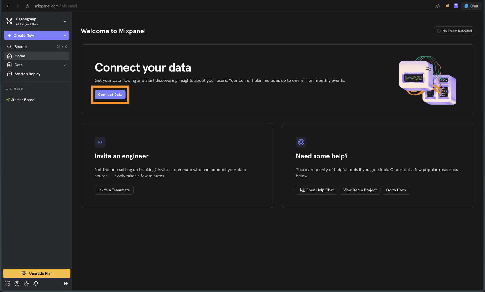
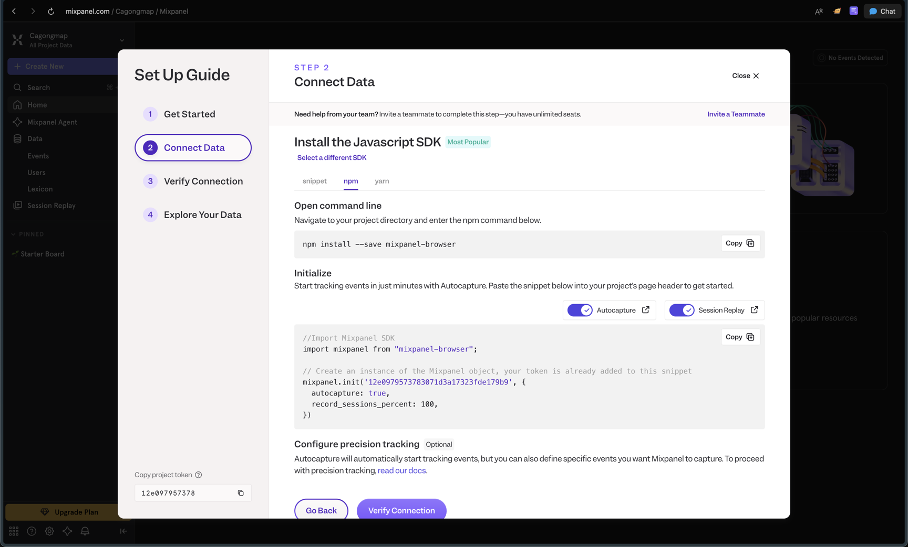

사용자 행동 분석하기
사용자 행동 분석하기
사용자 행동 데이터가 왜 필요한지 잡고, Mixpanel을 직접 붙여 이벤트를 심고 확인합니다.
얻어갈 것
- 사용자 행동 데이터를 다음 개선을 고르는 재료로 보고, 방문·이벤트·속성을 구분합니다.
- Mixpanel을 직접 붙여 이벤트를 심고, MCP로 AI에게 분석까지 시킵니다.
왜 행동 데이터를 봐야 하나
서비스를 공개하고 나면 "사용자가 잘 쓰고 있나"를 감이 아니라 수치로 확인해야 합니다. 생각보다 사용자는 우리 예상대로 움직이지 않기 때문입니다.
- 우리가 공들인 기능을 아무도 안 누르기도 하고, 별생각 없이 만든 화면에서 사용자가 오래 머물기도 합니다.
- 그래서 전환율을 봅니다. 예를 들어 방문자 중에 회원가입을 한 비율처럼, 우리가 원하는 행동까지 실제로 간 사용자의 비율입니다.
- 전환율이 낮은 지점이 곧 개선할 지점입니다. 결제하기 창까지 갔는데 결제를 안 한 비율이 높다면, 그 사이 어딘가에 문제가 있다는 뜻이니 찾아서 고치면 됩니다.
이런 분석을 통틀어 프로덕트 애널리틱스(Product Analytics)라고 부릅니다. 도구나 자료를 검색할 때 이 키워드로 찾으면 됩니다.
행동 데이터의 기본 단위
아래 세 단어만 구분해도 AI에게 일을 시키기 쉬워집니다.
| 단위 | 뜻 | 느좋카페 예시 |
|---|---|---|
| 방문(page visit) | 사용자가 어떤 페이지에 들어옴 | / 진입, 지도 페이지 진입 |
| 이벤트(event) | 사용자가 의미 있는 행동을 함 | 검색, 카페 상세 열기, 북마크, 제보 |
| 속성(property) | 그 행동에 딸린 정보 | 북마크 + 어느 카페인지, 어디서 들어왔는지 |
방문 수는 "사람이 왔는지"를 봅니다. 이벤트는 "와서 무엇을 했는지"를 봅니다. 속성은 "그게 어떤 상황이었는지"를 봅니다.

알아 둬야 할 용어들
여기부터는 우리가 심는 게 아니라, 쌓인 이벤트를 도구가 묶어서 보여주는 것들입니다.
| 용어 | 뜻 | 느좋카페 예시 |
|---|---|---|
| 퍼널 | 목표 행동까지 가는 단계의 순서 | 지도 열기 → 카페 상세 보기 → 북마크 |
| CTA | 사용자가 다음 행동을 하게 만드는 버튼이나 문구 | "카페 제보하기", "북마크", "길찾기" |
| 전환 | 우리가 원한 행동이 실제로 일어남 | 상세 보기 후 북마크, 제보 제출 |
| 이탈 | 다음 단계로 가지 않고 나감 | 지도만 보고 바로 나감 |
| 유입 경로 | 사용자가 어디서 들어왔는지 | 카카오톡 공유 링크, 검색, 인스타 링크 |
퍼널은 이벤트들을 목표까지의 순서로 이어놓고 "어디서 많이 빠지는지"를 봅니다. CTA는 꼭 큰 구매 버튼만 뜻하지 않습니다.

도구 고르기
수집과 분석은 도구가 대신 해줍니다. 직접 데이터베이스에 로그를 쌓을 필요 없이, 도구의 코드 몇 줄을 붙이면 됩니다.
- Vercel Web Analytics — Vercel에 배포했다면 방문 데이터를 기본으로 보여줍니다. 다만 무료는 보관 기간이 제한되고, 버튼 클릭이나 폼 입력 같은 커스텀 이벤트를 심으려면 유료로 넘어가야 합니다.
- Google Analytics — 무료이고 구글 검색·광고 등 구글 생태계와 연동이 좋습니다. 그만큼 화면이 복잡해서 처음에는 필요한 지표만 골라 봐야 합니다.
- Mixpanel — 이벤트와 퍼널 분석을 쉽고 빠르게 시작할 수 있습니다.
- Amplitude — 분석 외에 세션 리플레이 같은 기능까지 통합 지원합니다.
넷 다 실제 기업들이 많이 쓰는 도구이고, MVP 규모에서는 전부 무료로 시작할 수 있습니다. 방문 수만 보면 되는 단계라면 이미 배포에 쓰는 Vercel Web Analytics로 충분합니다. 이 레슨은 커스텀 이벤트와 퍼널까지 무료로 가장 빨리 볼 수 있는 Mixpanel로 실습합니다.
Mixpanel로 행동 데이터 분석하기
1. Mixpanel 가입하고 프로젝트 만들기
mixpanel.com에서 가입하면 조직과 프로젝트를 만드는 화면이 나옵니다.

가입이 끝나면 첫 대시보드가 나옵니다. 아직 이벤트가 하나도 없으니 "No Events Detected" 상태입니다. 여기서 Connect Data를 누릅니다.

2. SDK 설치하고 연결 확인하기
Connect Data로 들어가면 Set Up Guide가 나옵니다. Javascript SDK의 npm 탭을 고르면 설치 명령어와 초기화 코드가 보입니다. 이 코드에는 우리 프로젝트의 토큰이 이미 들어 있습니다.

이 화면의 코드를 직접 옮겨 적을 필요는 없습니다. 복사해서 아래 P1 프롬프트와 함께 AI에게 넘기세요.
Mixpanel을 이 프로젝트에 붙여줘. 아래는 Mixpanel이 준 설치 명령어와 초기화 코드야: 1. 명령어 npm install --save mixpanel-browser 2. 코드 [붙여넣기] - 앱이 시작될 때 한 번만 초기화되게 해줘. - 초기화하고 브라우저로 제대로 동작하는지 검증까지 해줘.
AI가 붙여준 뒤 로컬에서 서비스를 열고 몇 번 클릭해 봅니다. Mixpanel 화면으로 돌아가 Verify Connection을 누르거나 Events 메뉴를 열었을 때 방금 만든 이벤트가 보이면 연결 성공입니다.
3. 주요 이벤트 심기
분석을 필요로 하는 핵심 행동은 이벤트로 심습니다.
아래 행동을 추적할 이벤트로 설계해서 실제 코드에 심어줘. 내가 중요하게 보는 행동: - 사용자가 로그인을 해서 제보를 하기 - 사용자가 북마크를 하기 - 사용자가 장소에 리뷰 남기기 - 각 행동이 실제로 성공한 시점에만 이벤트를 보내줘. - 이벤트 네이밍 컨벤션은 https://docs.mixpanel.com/docs/data-structure/events-and-properties 을 참고해줘. - 이메일, 위치 같은 민감한 값은 속성에 넣지 마.
심고 나서는 직접 제보, 북마크, 리뷰를 한 번씩 해 보고 Events 화면에 셋 다 찍히는지 확인합니다.
4. 대시보드 확인하고 AI에게 분석시키기
이벤트가 쌓이기 시작하면 Mixpanel의 Insights에서 이벤트별 숫자를, Funnels에서 단계별 이탈을 볼 수 있습니다.
대시보드를 직접 해석하는 대신 AI에게 분석을 시킬 수도 있습니다. Mixpanel은 MCP 서버를 제공해서, 연결해두면 AI가 대시보드 데이터를 직접 조회해서 답해줍니다. Claude Code에서는 아래 명령어 한 줄로 연결하고, 처음 쓸 때 브라우저에서 Mixpanel 로그인만 해주면 됩니다.
claude mcp add --transport http mixpanel https://mcp.mixpanel.com/mcp # Mixpanel MCP 서버 연결
데이터가 차면 아래와 같이 분석을 요청해 보세요.
Mixpanel MCP로 우리 서비스 행동 데이터를 분석해줘. 먼저 지금 어떤 이벤트가 얼마나 쌓이고 있는지 확인하고, 그다음에: - 지난 7일 동안 가장 많이 발생한 이벤트 순서 - 방문에서 북마크, 제보, 리뷰 같은 핵심 행동까지 가는 퍼널에서 어디서 가장 많이 빠지는지 - 그 전 주와 비교해서 눈에 띄게 늘거나 줄어든 수치 숫자가 너무 작아서 판단하면 안 되는 건 그렇다고 말해주고, 이 데이터를 근거로 고칠 것이 있다면 제안해줘.